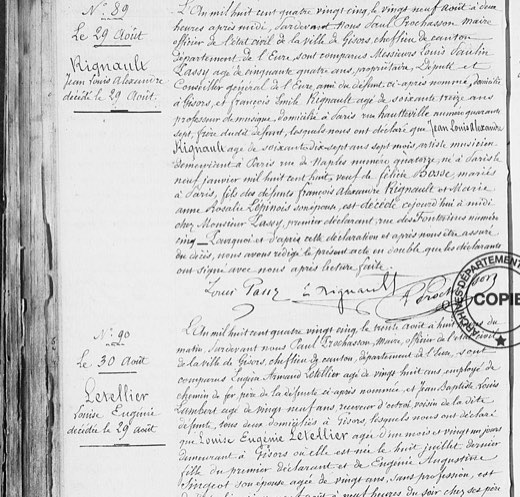

Sosa 20 · Côté Rignault
Alexandre Rignault
Né en 1780 à SaulieuMort en 1858 à Paris
Arrière-arrière-grand-père de René, côté paternel. 2es violons (chef), timbalier ; 105 Vieille-rue-du-Temple.
Récit
Un enfant prénommé Alexandre est baptisé le 5 novembre 1780 à Saulieu, en Côte-d'Or, bourg du Morvan sur la route de Paris à Lyon. L'acte le dit fils d'Alexandre Rignault, maître perruquier, semble-t-il, et de Jacquette Navarre ; son parrain est François, son frère mineur, sa marraine Anne, sa sœur mineure. Que ce nouveau-né soit l'Alexandre de Paris repose sur l'acte de décès de 1858, qui dit le défunt né à Saulieu, âgé de 77 ans et 2 mois, fils d'Alexandre Rignault et de Jaquette Navarre : le lien est partiellement vérifié. Le père, devenu limonadier, serait mort à Saulieu en juin 1816.
On ne sait ni quand ni pourquoi il quitte Saulieu. Il se marie à Paris le 21 août 1807 avec Marie Anne Rosalie Lepinoy, ou Lepinois, que l'acte de décès de 1862 dit fille de Pierre Lépinois et de Marie Anne Rosalie Trousselle, née à Noyon ; les registres parisiens d'avant 1860 ayant brûlé en 1871, l'union ne se connaît que par une fiche d'index, qui la place dans l'ancien 11e arrondissement : l'acte n'a pas été retrouvé. Leur fils Jean Louis Alexandre naît à Paris en 1808 ; un second fils, François Émile, est connu lui aussi. L'acte de mariage de 1844 dit Jean Louis Alexandre fils d'Alexandre Rignault et de Marie Anne Lepinois. Une Marie Anne Rosalie Lepinois, couturière née à Noyon, met au monde un fils, Jean Édouard Amélie, en juillet 1804, trois ans avant ce mariage ; l'acte ne nomme pas de père, et rien n'indique qui il fut. Qu'elle soit l'épouse d'Alexandre est une identification partiellement vérifiée.
Peut-être est-il musicien. En 1828, un « Rignault aîné » est chef des seconds violons et timballier au Théâtre de Madame, et un « Rignault (Alexandre) » second violon à la Gaîté : père ou fils, les sources ne tranchent pas. En 1830, un « Rignault père » joue de l'alto au Théâtre de Madame, mais l'identification n'est qu'une inférence. En 1846-1847, un « Rignault père », alto du théâtre du Palais-Royal, demeure rue des Petites-Écuries, n° 3, adresse où meurt Alexandre ; l'identification repose sur cette seule adresse. En janvier 1847, un témoin prénommé Alexandre, 66 ans, artiste musicien, rue des Petites-Écuries, semble se dire aïeul paternel de Marie Félicie. Un artiste musicien de Paris vit alors souvent modestement, entre petite bourgeoisie et monde du spectacle.
Il meurt à Paris le 24 janvier 1858, à neuf heures du soir, rue des Petites-Écuries, n° 3, dit, semble-t-il, rentier, époux de Marie Anne Rosalie Lépinois, qui lui survit : elle meurt quatre ans plus tard dans le même logement, dite sa veuve. Ses deux fils, Jean Louis Alexandre et François Émile, artistes musiciens, déclarent le décès. Adèle Félicie Bosse est sa belle-fille, et Marie Félicie, née en 1847, sa petite-fille, qui épousera Edmond Dubart ; un second petit-fils, Eugène Émile, né à Paris en 1851, n'est qu'une hypothèse non vérifiée. Son prénom reste discuté : « Jean-Baptiste » selon l'arbre, « François Alexandre » dans l'acte de 1885, alors que l'acte de 1780 ne donne que « Alexandre ». Selon l'arbre, non vérifié, il est inhumé à Montmartre. On ne sait pas ce qui fit du fils d'un perruquier un musicien de Paris, si l'on admet qu'il le fut.
Contexte : recherches/generation-5/rignault-lepinois/rapport.md ; recherches/generation-4/dubart-edmond/contexte-historien.md.
Récit rédigé le 11 novembre 2026 à partir de la base, qui fait foi. Chaque marque ouvre la preuve du passage.
Famille
Autres liens dits par les actes
- François RIGNAULT — frère
- Anne RIGNAULT — sœur
- Marie Félicie RIGNAULT — Alexandre est « grand-père paternel » de cette personne
Sa vie dans le temps
- Louis XVI et la Révolution
- Un enfant prénommé Alexandre est né et a été baptisé le 5/11/1780 à Saulieu, fils d'Alexandre Rignault, maître perruquier et de Jacquette Navarre — Saulieu vérifié
- Naissance : prénommé Jean Baptiste sur l'acte de décès de son fils François-Emile (vérifié, Edmond et Léon DUBART sont témoins du décès de François Emile et ont validé le prénom de Jean-Baptiste) (Saulieu, Côte-d'Or) — selon l'arbre transmis — Saulieu non vérifié
- Premier Empire
- Alexandre Rignault et Marie Anne Rosalie Lepinoy se marient à Paris le 21/08/1807. — Paris partiellement vérifié
- La fiche de mariage du 21/08/1807 (Rignault × Lepinoy) porte l'arrondissement ancien 11e — Paris partiellement vérifié
- Restauration
- En 1828, un « Rignault aîné » est chef des deuxièmes violons et timballier au Théâtre de Madame, 105 Vieille-rue-du-Temple — Paris partiellement vérifié
- En 1828, « Rignault (Alexandre) » est 2e violon à la Gaîté, 105 Vieille-rue-du-Temple — Paris partiellement vérifié
- Monarchie de Juillet
- Jean Louis Alexandre Rignault est fils d'Alexandre Rignault et de Marie Anne Lepinois (orthographe de l'acte de 1844). — Paris vérifié
- « Rignault père, alto » du Palais-Royal habite 3 rue des Petites-Écuries en 1845-46, adresse du père Alexandre en 1847-58 — Paris partiellement vérifié
- Domicile : 3 rue des Petites Ecuries (Paris) — selon l'arbre transmis — Paris non vérifié
- Second Empire
- Alexandre Rignault meurt à Paris le 24/01/1858 à neuf heures du soir, en son domicile rue des Petites-Écuries n° 3 ; l'acte est dressé le 25/01/1858. — Paris partiellement vérifié
- Alexandre Rignault est dit âgé de 77 ans et 2 mois [lecture probable], rentier [lecture probable], né à Saulieu (Côte-d'Or). — Saulieu partiellement vérifié
- Alexandre Rignault est dit époux de Marie Anne Rosalie Lépinois et fils de défunts Alexandre Rignault et Jaquette Navarre. — Paris partiellement vérifié
- L'adresse de 1858 (rue des Petites-Écuries n° 3) est celle de « Rignault père », altiste au Palais-Royal en 1846-47 (A0137). — Paris non vérifié
- Le décès de 1858 est déclaré par ses deux fils : Jean Louis Alexandre Rignault, 50 ans, artiste musicien, rue du Faubourg-Saint-Denis n° 78 [?], et François Émile Rignault, environ 45 ans [?], artiste musicien, rue Bergère n° 23 [?]. — Paris partiellement vérifié
- Inhumation : Cimetière Montmartre - division 9 / ligne 12 / numéro 18 (Paris) — selon l'arbre transmis — Paris non vérifié
- Post mortem : déclaration de succession 1er bureau n°289 — selon l'arbre transmis non vérifié
- Elle est dite veuve d'Alexandre Rignault en 1862 — Paris vérifié
Lieux
Documents (16)




Autres sources citées
- Almanach des spectacles de Paris, 1828 : Théâtre de Madame (p. 132-133) et Gaîté (p. 208) Annuaire, almanach · [BnF/Gallica ? à vérifier]
- Almanach des spectacles, 1830 : Théâtre de Madame Annuaire, almanach · [à vérifier]
- Annuaire des lettres, des arts et des théâtres, orchestre du Palais-Royal (en-tête « Année 1846-47 ») Annuaire, almanach · [à vérifier]
- Même annuaire, second volume (nom de fichier 1847) Annuaire, almanach · [à vérifier]
- Fiche de la table de reconstitution : mariage Rignault × Lepinoy, 21 août 1807, Paris Acte d'état civil · Archives de Paris · V3E/M 876
- Mariage de Jean Louis Alexandre Rignault et Adèle Félicie Bosse, Paris 6e ancien, novembre 1844 (acte rétabli en vertu de la loi du 12 février 1872) Acte d'état civil · Archives de Paris (état civil reconstitué)
- Décès d'Alexandre Rignault, limonadier, Saulieu (Côte-d'Or), juin 1816 Acte d'état civil · AD Côte-d'Or · FRAD021EC 584/018 (Saulieu 1809-1820)
- Décès d'Alexandre Rignault, Paris, 24 janvier 1858 (copie authentique de l'acte reconstitué, annexée à une minute notariale) Acte d'état civil · Archives de Paris · 5Mi1 1542
- Naissance de Marie Félicie RIGNAULT, Paris 3e arr., 26/01/1847 (déclarée le 27/01/1847) : expédition de l'acte reconstitué (loi du 12/02/1872) Acte d'état civil · Archives de Paris (reconstitution, Préfecture de la Seine) · Extrait déposé n° 315 869
- Annuaire des lettres, des arts et des théâtres, 1845-46 (Palais-Royal) Annuaire, almanach · Internet Archive · annuairedeslettr00pari
- Mariages rétablis 05-22/08/1807 (fiche 736160, images 0-46, haut de page) : recherche de Rignault × Lepinoy Acte d'état civil · Archives de Paris · 5Mi1 2016 (fiche 736160, 47 images)
Ce qu'on ignore
L'acte de mariage Rignault × Lepinoy du 21/08/1807 (11e arr. ancien) n'a pas été retrouvé dans le haut des pages de la fiche 5Mi1 2016 n° 736160 (05-22/08/1807)
recherche infructueuse Lecture du haut des pages seulement ; fiche voisine 736161 (22-31/08/1807) non ouverte ; ne prouve rien sur l'existence de l'acte. · A0794
Mentions de RIGNAULT dans orchestres de théâtre 1828-1847
partiel · 2026-10-29 — Rignault aîné/jeune/père dans plusieurs orchestres ; attribution non tranchée Pistes : Gallica, Almanach royal, archives des théâtres · R0036
Acte de mariage 21/8/1807 Paris
en cours · 2026-10-29 — [résultat déclaré : non recherche (non tentée)] Non établi Pistes : Archives de Paris, état civil reconstitué ; acte famille DOC-O17368 · R0037
Actes de décès 1858 et 1862
en cours · 2026-10-29 — [résultat déclaré : non recherche (non tentée)] Non établi Pistes : Archives de Paris, tables décennales, DQ7 · R0038
Mariage Rignault × Lepinoy (1807) et naissance de Jean Louis Alexandre Rignault (1808) : actes reconstitués
partiel · 2026-11-02 — Seules deux fiches de table lues (AP31, AP32) ; date de naissance en désaccord avec l'acte de 1885 (AP33, A0031). Non établi. Pistes : Actes reconstitués aux Archives de Paris (V3E/M 876 ; V3E/N 1942 et état civil reconstitué) pour les parents, professions et témoins. · R0103
Continuer l'exploration
Dossier complet : toutes les informations et leurs sources
Sosa 20.
Biographie
Récit rédigé le 2026-11-11 à partir de la base, qui fait foi. Les crochets renvoient aux assertions (onglet Toutes les informations).
Un enfant prénommé Alexandre est baptisé le 5 novembre 1780 à Saulieu, en Côte-d'Or, bourg du Morvan sur la route de Paris à Lyon. L'acte le dit fils d'Alexandre Rignault, maître perruquier, semble-t-il, et de Jacquette Navarre ; son parrain est François, son frère mineur, sa marraine Anne, sa sœur mineure. Que ce nouveau-né soit l'Alexandre de Paris repose sur l'acte de décès de 1858, qui dit le défunt né à Saulieu, âgé de 77 ans et 2 mois, fils d'Alexandre Rignault et de Jaquette Navarre : le lien est partiellement vérifié. Le père, devenu limonadier, serait mort à Saulieu en juin 1816. [A0128, A0129, A0167, A0307, A0308]
On ne sait ni quand ni pourquoi il quitte Saulieu. Il se marie à Paris le 21 août 1807 avec Marie Anne Rosalie Lepinoy, ou Lepinois, que l'acte de décès de 1862 dit fille de Pierre Lépinois et de Marie Anne Rosalie Trousselle, née à Noyon ; les registres parisiens d'avant 1860 ayant brûlé en 1871, l'union ne se connaît que par une fiche d'index, qui la place dans l'ancien 11e arrondissement : l'acte n'a pas été retrouvé. Leur fils Jean Louis Alexandre naît à Paris en 1808 ; un second fils, François Émile, est connu lui aussi. L'acte de mariage de 1844 dit Jean Louis Alexandre fils d'Alexandre Rignault et de Marie Anne Lepinois. Une Marie Anne Rosalie Lepinois, couturière née à Noyon, met au monde un fils, Jean Édouard Amélie, en juillet 1804, trois ans avant ce mariage ; l'acte ne nomme pas de père, et rien n'indique qui il fut. Qu'elle soit l'épouse d'Alexandre est une identification partiellement vérifiée. [A0292, A0791, A0794, A0782, A0297, A0306, A0305, A0785, A0788, A0787]
Peut-être est-il musicien. En 1828, un « Rignault aîné » est chef des seconds violons et timballier au Théâtre de Madame, et un « Rignault (Alexandre) » second violon à la Gaîté : père ou fils, les sources ne tranchent pas. En 1830, un « Rignault père » joue de l'alto au Théâtre de Madame, mais l'identification n'est qu'une inférence. En 1846-1847, un « Rignault père », alto du théâtre du Palais-Royal, demeure rue des Petites-Écuries, n° 3, adresse où meurt Alexandre ; l'identification repose sur cette seule adresse. En janvier 1847, un témoin prénommé Alexandre, 66 ans, artiste musicien, rue des Petites-Écuries, semble se dire aïeul paternel de Marie Félicie. Un artiste musicien de Paris vit alors souvent modestement, entre petite bourgeoisie et monde du spectacle. [A0133, A0134, A0136, A0137, A0533, A0364]
Il meurt à Paris le 24 janvier 1858, à neuf heures du soir, rue des Petites-Écuries, n° 3, dit, semble-t-il, rentier, époux de Marie Anne Rosalie Lépinois, qui lui survit : elle meurt quatre ans plus tard dans le même logement, dite sa veuve. Ses deux fils, Jean Louis Alexandre et François Émile, artistes musiciens, déclarent le décès. Adèle Félicie Bosse est sa belle-fille, et Marie Félicie, née en 1847, sa petite-fille, qui épousera Edmond Dubart ; un second petit-fils, Eugène Émile, né à Paris en 1851, n'est qu'une hypothèse non vérifiée. Son prénom reste discuté : « Jean-Baptiste » selon l'arbre, « François Alexandre » dans l'acte de 1885, alors que l'acte de 1780 ne donne que « Alexandre ». Selon l'arbre, non vérifié, il est inhumé à Montmartre. On ne sait pas ce qui fit du fils d'un perruquier un musicien de Paris, si l'on admet qu'il le fut. [A0303, A0304, A0305, A0306, A0745, A0032, A0131, A0773, AR0084, A0780, A0783]
Contexte : recherches/generation-5/rignault-lepinois/rapport.md ; recherches/generation-4/dubart-edmond/contexte-historien.md.
Faits clés
- Naissance : 05/11/1780, Saulieu, Côte-d'Or — non vérifié (arbre familial) [AR0081]
- Baptême : 05/11/1780, Saulieu — vérifié [A0128]
- Parents : Alexandre RIGNAULT (PR0040) et Jacquette NAVARRE (PR0041) — partiellement vérifié [A0305]
- Mariage : avec Marie Anne Rosalie LEPINOIS OU LEPINOY (P7060) — 21/08/1807, Paris — partiellement vérifié [A0292]
- Décès : 24/01/1858, Paris, rue des Petites-Écuries 3 — partiellement vérifié [A0303]
- Inhumation : 26/01/1858, Paris — non vérifié (arbre familial) [AR0084]
Famille
Liens tirés des assertions de la base ; le statut de chaque lien est celui des assertions citées. Les proches plus éloignés sont calculés à partir de ces liens directs.
Parents
- Alexandre RIGNAULT (PR0040) [A0305 partiellement vérifié, A0308 partiellement vérifié, AR0213 non vérifié]
- Jacquette NAVARRE (PR0041) [A0305 partiellement vérifié, AR0213 non vérifié]
Conjoint(s)
- Marie Anne Rosalie LEPINOIS OU LEPINOY (P7060) — mariage 1807-08-21 [A0292 partiellement vérifié, A0303 partiellement vérifié, A0305 partiellement vérifié, A0783 vérifié, A0791 partiellement vérifié, A0794 recherche infructueuse, AR0184 non vérifié]
Enfants
- Jean Louis Alexandre RIGNAULT (P5764) [A0032 non résolu, A0297 vérifié, A0306 partiellement vérifié, AR0186 non vérifié]
- François Emile RIGNAULT (PN0006) [A0306 partiellement vérifié]
Frères et sœurs
- aucun dans la base.
Proches et alliés (calculés)
Beaux-parents
- Pierre LEPINOIS (PR0042) — parent de Marie Anne Rosalie LEPINOIS OU LEPINOY (P7060) [A0292 partiellement vérifié, A0303 partiellement vérifié, A0305 partiellement vérifié, A0782 vérifié, A0783 vérifié, A0791 partiellement vérifié, A0794 recherche infructueuse, AR0184 non vérifié, AR0214 non vérifié]
- Marie Anne Rosalie TROUSSELLE (PR0043) — parent de Marie Anne Rosalie LEPINOIS OU LEPINOY (P7060) [A0292 partiellement vérifié, A0303 partiellement vérifié, A0305 partiellement vérifié, A0782 vérifié, A0783 vérifié, A0791 partiellement vérifié, A0794 recherche infructueuse, AR0184 non vérifié, AR0214 non vérifié]
Gendres et belles-filles
- Adèle Félicie BOSSE (P5767) — conjoint de Jean Louis Alexandre RIGNAULT (P5764) [A0032 non résolu, A0295 partiellement vérifié, A0297 vérifié, A0306 partiellement vérifié, A0764 vérifié, AR0182 non vérifié, AR0186 non vérifié]
Petits-enfants
- Marie Félicie RIGNAULT (P5234) — par Jean Louis Alexandre RIGNAULT (P5764) [A0032 non résolu, A0258 vérifié, A0297 vérifié, A0306 partiellement vérifié, A0361 vérifié, AR0183 non vérifié, AR0186 non vérifié]
- Eugène Émile RIGNAULT (PN0056) — par Jean Louis Alexandre RIGNAULT (P5764) [A0032 non résolu, A0297 vérifié, A0306 partiellement vérifié, A0773 non vérifié, AR0186 non vérifié]
Autres parentés dites par les actes
- François RIGNAULT (P30957) — frère [A0129 vérifié]
- Anne RIGNAULT (P30961) — sœur [A0129 vérifié]
- Marie Félicie RIGNAULT (P5234) — Alexandre est « grand-père paternel » de cette personne [A0364 partiellement vérifié]
Toutes les informations
-
[A0128] vérifié · transcription · confiance forte — Un enfant prénommé Alexandre est né et a été baptisé le 5/11/1780 à Saulieu, fils d'Alexandre Rignault, maître perruquier et de Jacquette Navarre
- Limite : La profession (« perruquier » ?) est incertaine ; l'acte ne dit pas que l'enfant est le musicien.
- Possibilités : —
- Sources : S0071
- [A0129] vérifié · transcription · confiance forte — Le baptisé de 1780 a pour parrain François, son frère mineur, et pour marraine Anne, sa sœur mineure
-
[A0130] non vérifié · hypothèse · confiance faible — Alexandre RIGNAULT (Sosa 20) est le baptisé de Saulieu du 5/11/1780
- Limite : Absence d'acte de décès 1858 lu (âge).
- Possibilités : Homonyme (autre Alexandre Rignault né ailleurs) ; l'arbre est une piste, non une preuve.
- Sources : S0071
- [A0131] vérifié · transcription · confiance moyenne — Alexandre RIGNAULT n'est pas nommé « Jean-Baptiste » ni « François » sur l'acte de baptême de 1780 (prénom unique : Alexandre)
- [A0167] partiellement vérifié · recoupement · confiance moyenne — Le baptisé de Saulieu du 5/11/1780 (fils d'Alexandre Rignault, maître perruquier, et de Jacquette Navarre) a les mêmes parents que ceux que le rapport Heredis donne à Alexandre RIGNAULT (Sosa 20)
-
[A0307] partiellement vérifié · recoupement · confiance forte — Le défunt de Paris 1858 (Alexandre Rignault, né à Saulieu, 77 ans 2 mois, fils d'Alexandre Rignault et Jaquette Navarre) est le baptisé de Saulieu du 05/11/1780.
- Limite : Âge en lecture probable. Le baptême de 1780 donne le père « maître perruquier », l'acte de 1816 « limonadier » : changement de métier possible, non documenté. Complète l'hypothèse A0130.
- Possibilités : Un frère aîné ou cadet homonyme (autre baptême Alexandre à Saulieu) : aucun repéré.
- Sources : S0171, S0071
-
[A0776] non vérifié · transcription · confiance faible — Le fichier de l'état civil reconstitué contient une fiche de naissance « Rignault, Alexandre », 28 brumaire an XII [20/11/1803], 11e arrondissement ancien.
- Limite : Aucun lien établi avec Alexandre Rignault et Marie Anne Rosalie Lépinoy (mariés le 21/08/1807, arbre/A0292) ni avec leurs enfants ; aucune hypothèse formulée. Alexandre est un prénom répandu dans cette famille : homonyme possible.
- Possibilités : Fils d'Alexandre Rignault (avant le mariage de 1807) ; homonyme ; autre famille.
- Sources : S0429
-
[A0292] partiellement vérifié · transcription · confiance moyenne — Alexandre Rignault et Marie Anne Rosalie Lepinoy se marient à Paris le 21/08/1807.
- Limite : Fiche d'index, pas l'acte. Graphie Lepinoy (fiche), Lepinois (actes de 1844 et 1858). L'identité de cet Alexandre avec le natif de Saulieu vient de AP41 et AP43, pas de la fiche.
- Sources : S0167
-
[A0791] partiellement vérifié · transcription · confiance moyenne — La fiche de mariage du 21/08/1807 (Rignault × Lepinoy) porte l'arrondissement ancien 11e
- Limite : Annule la lecture « numéro d'ordre » du lot A2 ; fiche d'index, non acte.
- Sources : S0167
-
[A0794] recherche infructueuse · recoupement · confiance faible — L'acte de mariage Rignault × Lepinoy du 21/08/1807 (11e arr. ancien) n'a pas été retrouvé dans le haut des pages de la fiche 5Mi1 2016 n° 736160 (05-22/08/1807)
- Limite : Lecture du haut des pages seulement ; fiche voisine 736161 (22-31/08/1807) non ouverte ; ne prouve rien sur l'existence de l'acte.
- Sources : S0437
- [A0308] partiellement vérifié · recoupement · confiance moyenne — Le défunt de Saulieu de juin 1816 (Alexandre Rignault, limonadier, époux de Marie Jaquette Navarre) est le père de l'Alexandre Rignault mort à Paris en 1858 (fils de défunts Alexandre Rignault et Jaquette Navarre).
-
[A0133] partiellement vérifié · transcription · confiance moyenne — En 1828, un « Rignault aîné » est chef des deuxièmes violons et timballier au Théâtre de Madame, 105 Vieille-rue-du-Temple
- Limite : Alexandre père ou fils ? ; « aîné » non daté de naissance.
- Sources : S0073
-
[A0134] partiellement vérifié · transcription · confiance moyenne — En 1828, « Rignault (Alexandre) » est 2e violon à la Gaîté, 105 Vieille-rue-du-Temple
- Limite : Prénom Alexandre commun au père et au fils.
- Sources : S0073
-
[A0136] partiellement vérifié · inférence · confiance faible — En 1830, un « Rignault père » est altiste au Théâtre de Madame
- Limite : OCR incertain ; identification inférée.
- Possibilités : Autre Rignault plus âgé.
- Sources : S0075
-
[A0297] vérifié · transcription · confiance moyenne — Jean Louis Alexandre Rignault est fils d'Alexandre Rignault et de Marie Anne Lepinois (orthographe de l'acte de 1844).
- Limite : Acte abrégé : pas de mention « feu » pour les parents.
- Sources : S0169
-
[A0533] partiellement vérifié · inférence · confiance moyenne — « Rignault père, alto » du Palais-Royal habite 3 rue des Petites-Écuries en 1845-46, adresse du père Alexandre en 1847-58
- Limite : idem gen-5 §2.7, renforcé par l'adresse du fils (AP109)
- Sources : S0258
-
[A0364] partiellement vérifié · transcription · confiance faible — Un témoin prénommé Alexandre, 66 ans, artiste musicien, rue des Petites-Écuries, est dit « aïeul paternel de l'enfant » dans l'acte de naissance de Marie Félicie (1847).
- Limite : Lecture incertaine. Identification avec le P-ID de l'arbre non établie par ce document seul ; à croiser avec l'acte de naissance d'Alexandre vers 1780 (lot A, fichier N Rignault Alexandre 1780).
- Sources : S0185
-
[A0303] partiellement vérifié · transcription · confiance moyenne — Alexandre Rignault meurt à Paris le 24/01/1858 à neuf heures du soir, en son domicile rue des Petites-Écuries n° 3 ; l'acte est dressé le 25/01/1858.
- Limite : Marge du fichier : « 24 janvier 1858 ».
- Sources : S0171
-
[A0304] partiellement vérifié · transcription · confiance moyenne — Alexandre Rignault est dit âgé de 77 ans et 2 mois [lecture probable], rentier [lecture probable], né à Saulieu (Côte-d'Or).
- Limite : Âge déclaré par les fils ; il donne une naissance en novembre 1780 environ.
- Sources : S0171
-
[A0305] partiellement vérifié · transcription · confiance moyenne — Alexandre Rignault est dit époux de Marie Anne Rosalie Lépinois et fils de défunts Alexandre Rignault et Jaquette Navarre.
- Sources : S0171
-
[A0309] non vérifié · recoupement · confiance faible — L'adresse de 1858 (rue des Petites-Écuries n° 3) est celle de « Rignault père », altiste au Palais-Royal en 1846-47 (A0137).
- Limite : Ne rien conclure de l'adresse seule sur l'activité musicale d'Alexandre père.
- Possibilités : Annuaires-almanachs 1846-1858 pour Rignault, rue des Petites-Écuries.
- Sources : S0171
-
[A0306] partiellement vérifié · transcription · confiance moyenne — Le décès de 1858 est déclaré par ses deux fils : Jean Louis Alexandre Rignault, 50 ans, artiste musicien, rue du Faubourg-Saint-Denis n° 78 [?], et François Émile Rignault, environ 45 ans [?], artiste musicien, rue Bergère n° 23 [?].
- Limite : Établit la fratrie : François Émile est frère de Jean Louis Alexandre.
- Sources : S0171
-
[A0783] vérifié · transcription · confiance forte — Elle est dite veuve d'Alexandre Rignault en 1862
- Limite : Lecture de la ponctuation à confirmer.
- Sources : S0433
-
[A0745] partiellement vérifié · transcription · confiance moyenne — L'acte de décès de 1895 dit François Émile Rignault fils de « Jean Baptiste Rignault » et de « Augustine Lépinois », époux décédés
- Limite : Prénom du père : « Jean Baptiste » (1895), « François Alexandre » (Gisors 1885, A0032), « Alexandre » (baptême 1780) : non résolu. Mère : « Augustine » (1895) contre « Marie Anne Rosalie » (mariage 1807) : même doute.
- Possibilités : Jean Baptiste / François Alexandre / Alexandre
- Sources : S0417
- [A0032] non résolu · recoupement · confiance moyenne — Prénom du père de Jean Louis Alexandre Rignault : « François Alexandre » selon l'acte de décès de 1885 ; « Alexandre » ou « Jean-Baptiste » selon l'arbre.
- [A0137] partiellement vérifié · recoupement · confiance moyenne — En 1846-47, « Rignault père », altiste au Palais-Royal, demeure 3 rue des Petites-Écuries
-
[AR0081] non vérifié · rapporté par un tiers · confiance faible — naissance ; 1780-11-05 ; Saulieu, Côte-d'Or — note de l'arbre : prénommé Jean Baptiste sur l'acte de décès de son fils François-Emile (vérifié, Edmond et Léon DUBART sont témoins du décès de François Emile et ont validé le prénom de Jean-Baptiste)
- Sources : S-ARBRE
-
[AR0082] non vérifié · rapporté par un tiers · confiance faible — bapteme ; 1780-11-05 ; Saulieu, Côte-d'Or
- Sources : S-ARBRE
- [AR0184] non vérifié · rapporté par un tiers · confiance faible — mariage ; 1807-08-21 ; Paris, 11ème
- [AR0185] non vérifié · rapporté par un tiers · confiance faible — evenement couple:Residence ; 1847/1862 ; Paris — note de l'arbre : 3 rue des Petites Ecuries
-
[AR0083] non vérifié · rapporté par un tiers · confiance faible — deces ; 1858-01-24 ; Paris, 3ème
- Sources : S-ARBRE
-
[AR0084] non vérifié · rapporté par un tiers · confiance faible — inhumation ; 1858-01-26 ; Paris — note de l'arbre : Cimetière Montmartre - division 9 / ligne 12 / numéro 18
- Sources : S-ARBRE
-
[AR0085] non vérifié · rapporté par un tiers · confiance faible — evenement:Post mortem ; 1858-05-15 — note de l'arbre : déclaration de succession 1er bureau n°289
- Sources : S-ARBRE
-
[AR0080] non vérifié · rapporté par un tiers · confiance faible — profession ; Artiste musicien
- Sources : S-ARBRE
- [AR0186] non vérifié · rapporté par un tiers · confiance faible — filiation : Jean Louis Alexandre RIGNAULT (P5764) enfant de Alexandre RIGNAULT (P7058) et Marie Anne Rosalie LEPINOIS OU LEPINOY (P7060)
-
[AR0213] non vérifié · rapporté par un tiers · confiance faible — filiation : Alexandre RIGNAULT (P7058) enfant de Alexandre RIGNAULT (PR0040) et Jacquette NAVARRE (PR0041)
- Sources : S-RAPPORT
Recherches menées
- [R0035] Acte de baptême d'Alexandre RIGNAULT, Saulieu 1780 — trouve : Baptême lu ; parents Alexandre / Jacquette Navarre, parrain François, marraine Anne ; identification avec Sosa 20 non prouvée Pistes : décès/mariage à Paris ; registre Saulieu 2E 584 autres années
- [R0036] Mentions de RIGNAULT dans orchestres de théâtre 1828-1847 — partiel : Rignault aîné/jeune/père dans plusieurs orchestres ; attribution non tranchée Pistes : Gallica, Almanach royal, archives des théâtres
- [R0037] Acte de mariage 21/8/1807 Paris — en_cours : [résultat déclaré : non recherche (non tentée)] Non établi Pistes : Archives de Paris, état civil reconstitué ; acte famille DOC-O17368
- [R0038] Actes de décès 1858 et 1862 — en_cours : [résultat déclaré : non recherche (non tentée)] Non établi Pistes : Archives de Paris, tables décennales, DQ7
- [R0103] Mariage Rignault × Lepinoy (1807) et naissance de Jean Louis Alexandre Rignault (1808) : actes reconstitués — partiel : Seules deux fiches de table lues (AP31, AP32) ; date de naissance en désaccord avec l'acte de 1885 (AP33, A0031). Non établi. Pistes : Actes reconstitués aux Archives de Paris (V3E/M 876 ; V3E/N 1942 et état civil reconstitué) pour les parents, professions et témoins.
- [R0105] Les Rignault de Saulieu : décès d'Alexandre (1816) et d'Alexandre fils (Paris, 1858) — trouve : Le défunt de Paris 1858 est né à Saulieu, fils d'Alexandre Rignault et de Jaquette Navarre, 77 ans 2 mois : il est le baptisé de Saulieu du 5/11/1780 (AP46), et son père est le limonadier mort à Saulieu en juin 1816 (AP40, AP47). Reste inconnu : changement de métier perruquier (1780) / limonadier (1816) ; lien entre l'adresse des Petites-Écuries et les almanachs (AP48). Pistes : Mariage Rignault × Navarre à Saulieu (vers 1770-1780) ; relire SP10 sur l'image (jour du décès, qualité de Dublet) ; acte de décès de Marie Jaquette Navarre (1825 ? rapport) ; Rignault et la musique à Paris (almanachs, A0133-A0138).
Sources citées
- S-ARBRE — Arbre Heredis « Généalogie DUBART René », export GEDCOM (consultee)
- S-RAPPORT — Rapport d'ascendance Heredis de René DUBART (5 générations) (consultee)
- S0004 — Décès de Jean Louis Alexandre RIGNAULT, Gisors, 29 août 1885 (copie du greffe) (consultee, 8 Mi 5664, vues 161)
- S0071 — Baptême d'Alexandre RIGNAULT, Saulieu, 5 nov. 1780 (consultee, 2E 584-007 (registre paroissial Saulieu 1780), vues 189)
- S0073 — Almanach des spectacles de Paris, 1828 : Théâtre de Madame (p. 132-133) et Gaîté (p. 208) (consultee)
- S0075 — Almanach des spectacles, 1830 : Théâtre de Madame (consultee)
- S0076 — Annuaire des lettres, des arts et des théâtres, orchestre du Palais-Royal (en-tête « Année 1846-47 ») (consultee)
- S0077 — Même annuaire, second volume (nom de fichier 1847) (consultee)
- S0167 — Fiche de la table de reconstitution : mariage Rignault × Lepinoy, 21 août 1807, Paris (consultee, V3E/M 876)
- S0169 — Mariage de Jean Louis Alexandre Rignault et Adèle Félicie Bosse, Paris 6e ancien, novembre 1844 (acte rétabli en vertu de la loi du 12 février 1872) (consultee)
- S0170 — Décès d'Alexandre Rignault, limonadier, Saulieu (Côte-d'Or), juin 1816 (consultee, FRAD021EC 584/018 (Saulieu 1809-1820), vues 626/922)
- S0171 — Décès d'Alexandre Rignault, Paris, 24 janvier 1858 (copie authentique de l'acte reconstitué, annexée à une minute notariale) (consultee, 5Mi1 1542, vues 2 pages)
- S0185 — Naissance de Marie Félicie RIGNAULT, Paris 3e arr., 26/01/1847 (déclarée le 27/01/1847) : expédition de l'acte reconstitué (loi du 12/02/1872) (consultee, Extrait déposé n° 315 869)
- S0258 — Annuaire des lettres, des arts et des théâtres, 1845-46 (Palais-Royal) (consultee, annuairedeslettr00pari, vues pos. 1111857)
- S0417 — Décès de François Émile RIGNAULT, Paris 10e arr., acte n° 1383 du 15/03/1895 (consultee, V4E 8959, vues fiche 402378, image 16)
- S0429 — Fichier de l'état civil reconstitué, naissances, V3E/N 1942 « Rignault (1803) – Rignolet (1858) » : fiches Rignault (consultee, V3E/N 1942, vues images 0-50 (fiche 636264), img 00, 01, 02, 03, 21, 26, 29)
- S0433 — Décès de Marie Anne Rosalie Lépinois, Paris 10e arr., 1er février 1862 (acte n° 469) (consultee, V4E 1121 (fiche 360567, 31 images), vues image 18)
- S0437 — Mariages rétablis 05-22/08/1807 (fiche 736160, images 0-46, haut de page) : recherche de Rignault × Lepinoy (consultee, 5Mi1 2016 (fiche 736160, 47 images), vues 0-46 (haut de page))